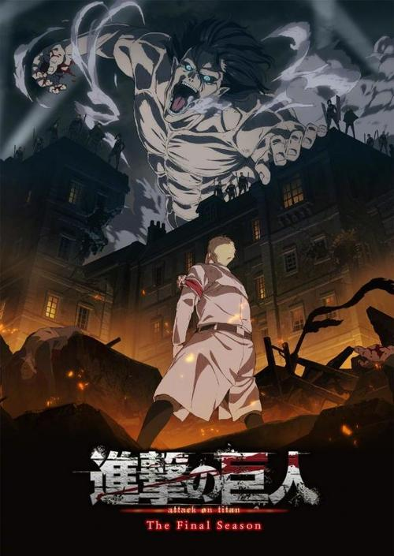

动画第1期由WITSTUDIO负责动画制作，于2013年4月7日—2013年9月29日播放。
主要讲述了：世界上突然出现了人类的天敌“巨人”，面临着生存危机而残存下来的人类逃到了一个地方，盖起了三重巨大的城墙。人们在这隔绝的环境里享受了一百多年的和平，直到艾伦·耶格尔十岁那年，60米高的“超大型巨人”和“铠之巨人”突然出现，以压倒性的力量破坏城门，其后瞬间消失，巨人们成群的冲进墙内捕食人类。艾伦亲眼看着人们以及自己的母亲被巨人吞食，怀着对巨人无法形容的憎恨，誓言杀死全部巨人。 随后，他加入了调查兵团，并在战斗中得知自己能够变成巨人，在一系列的对抗与磨难中，人类逐渐在巨人手中扳回一局，逆转了颓势。
动画第2期于2017年4月1日—2017年6月17日播放
主要讲述了：城墙崩坏bai的两年后，艾伦加入104期训练兵团学习和巨人战斗的技术。在训练兵团的三年，艾伦在同期训练兵里有着其他人无法比拟的强悍精神力。即使亲眼见过地狱也依然勇敢地向巨人挑战的艾伦，如愿以偿加入了向往已久的调查兵团。在他正做着到墙壁的外面去这个梦的时候，毁坏墙壁的超大巨人出现了，然后人类和巨人展开了生死较量。 在第二季的最终，在生死一线之际艾伦意外使出了“坐标”之力，指挥身边的无脑巨人加入到了己方战斗，并且保护队伍在回城路上全员安然无恙。
动画第3期于2018年7月22日—2019年6月30日播放

主要讲述了：人类长期以来隐藏在墙壁中的巨大秘密是——墙壁是由巨人组成的。虽然调查兵团离真相更近了一步，但由于当时的王政，却被冠以了反叛者的污名。但是，人类不仅仅是被饲养的家畜。追求真相的艾尔文・史密斯的执念动摇了宪兵团的领导，终于爆发了对现体制的政变。持续欺骗民众的虚伪之王退居，继承真正王家血统的希丝特莉亚·雷斯即位。 在自己成功讨伐巨人的勇敢女王身边，人类迎来了新的时代。而艾伦・耶格尔获得了硬质化能力和由此诞生的新型对巨人兵器。稳步而顺利地进行反抗准备的人类，为了心中的夙愿，毅然实行了夺回玛利亚之墙的作战。 人类和巨人，赌上彼此生存的究极之战。而岛上的人类也终于开始踏上了走向外面世界的第一步。
动画最终季由MAPPA负责动画制作，于2020年12月6日起持续更新中。
主要讲述了：调查兵团进行了壁外调查。墙壁的另一边是大海，大海的另一边是自由还是战争？马莱帝国与岛上的人们将以什么样的姿态相处？在持续的更新中，我们将进一步了解事态的进展...